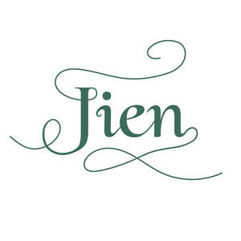
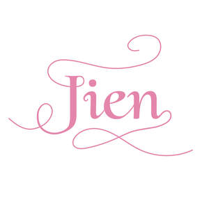

Trade Mark Journal No.2025/046 14 November 2025
UK00004289553 5 November 2025 (1,3,5,10,30,31,41,44)
Mark 1

Mark 2
Mark 3
Mark 4
Mark 5
Mark 6

- Class 1
- Herb extracts, other than essential oils, for use in the manufacture of cosmetics.
- Class 3
- Bath herbs; Extracts of flowers [perfumes]; Flowers (Extracts of -) [perfumes]; Extracts of flowers being perfumes; Cosmetics; Skincare cosmetics; Moisturisers [cosmetics]; Cosmetics and cosmetic preparations; Skin fresheners [cosmetics]; Skin moisturizers used as cosmetics; Natural cosmetics; Beauty care cosmetics; Facial creams [cosmetics]; Body creams [cosmetics]; Functional cosmetics; Non-medicated cosmetics and toiletry preparations; Cosmetics in the form of creams; Creams (Cosmetic -); Cosmetic creams; Cosmetic soaps; Hair care lotions [for cosmetic use]; Beauty lotions; Moisturising skin lotions [cosmetic]; Body and facial gels [cosmetics]; Serums for cosmetic purposes; Cosmetic kits; Ointments for cosmetic use; Gels for cosmetic purposes.
- Class 5
- Health food supplements for persons with special dietary requirements; Health food supplements made principally of vitamins; Health food supplements made principally of minerals; Medicinal herbs; Herbs (Medicinal -); Extracts of medicinal herbs; Decoctions of medicinal herb; Herbs for medicinal purposes; Medicinal herb infusions; Chinese traditional medicinal herbs; Medicinal herb extracts; Herb teas for medicinal purposes; Medicinal herbs in dried or preserved form; Plant and herb extracts for medicinal use; Herbal teas for medicinal purposes; Herbal tea for medicinal use; Medicinal oils; Oils (Medicinal -); Herbal supplements; Medicinal ointments; Extracts of medicinal plants; Herbal beverages for medicinal use; Herbal medicine; Liquid herbal supplements; Medicinal infusions; Medicinal herbal extracts for medical purposes; Anti-oxidants obtained from herbal sources; Medicinal tea; Herbal sprays for medical use; Medicinal preparations and substances; Herbal creams for medical use; Herbal preparations for medical use.
- Class 10
- Massage appliances.
- Class 30
- Herbal teas, other than for medicinal use; Herbal infusions [other than for medicinal use]; Aromatic teas [other than for medicinal use]; Herbal tea [other than for medicinal use]; Non-medicinal herbal infusions; Herb tea [infusions]; Herbal teas; Edible spices; Herbal teas [infusions]; Spices; Non-medicinal herbal tea; Herbal infusions; Fruit flavoured tea [other than medicinal]; Herbal tea.
- Class 31
- Organic fresh herbs; Dried plants; Natural plants and flowers.
- Class 41
- Health education; Health and wellness training; Education services relating to health; Providing of training in the field of health care and nutrition; Training services relating to health and safety; Provision of educational services relating to health; Tuition in medicinal herbalism.
- Class 44
- Health care; Medical health assessment services; Health centers; Health consultancy; Health spa services; Advisory services relating to health care; Health care relating to relaxation therapy; Health care relating to therapeutic massage; Cosmetic body care services provided by health spas; Healthcare; Advisory services relating to health; Beauty care services provided by a health spa; Health assessment surveys; Medical and healthcare clinics; Medical treatment services provided by a health spa; Human hygiene and beauty care; Cosmetic body care services; Providing psychological treatment; Alternative medicine services; Ayurveda therapy; Health care relating to acupuncture; Herbalism; Beauty spa services; Medical spa services; Massage; Hot stone massage therapy services; Massages; Massage services; Beauty therapy treatments; Facial beauty treatment services; Salons (Beauty -); Skin care salon services; Beauty therapy services; Aromatherapy services; Reflexology services.
Lianne Aquilina